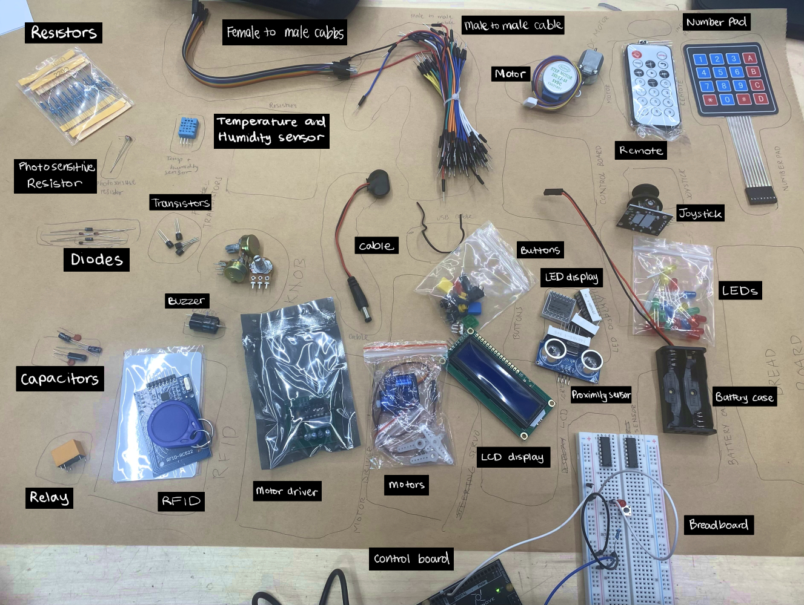

I have minimal experience with Arduino, but it has been years since I last used the components and software. This week's workshop was a helpful refresher on Arduino components and the basics of C++ programming.
I have never used most of these components, and I'm excited to incorporate them into my work, particularly the different types of sensors and multi-row LED displays.